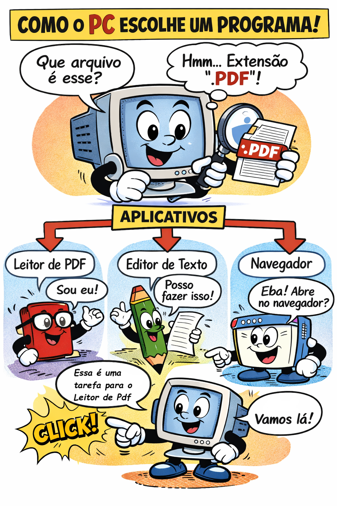

Uma extensão é o texto que aparece depois do ponto no nome do arquivo, como .docx ou .jpg. Ela não é só parte do nome; ela diz ao computador que tipo de conteúdo está dentro do arquivo.
Exemplo: o arquivo trabalho.docx está no formato de texto do Word, enquanto foto.jpg é uma imagem. O computador usa essa indicação para escolher qual programa abrir.
Quando você clica duas vezes em um arquivo, o Windows faz duas perguntas:
Se a extensão for .pdf, o sistema procura o programa associado a PDF (como Adobe Reader). Se for .mp3, procura o player de música.
Essa associação é um tipo de metadado: o sistema sabe que arquivos com a mesma extensão pertencem a mesma família e abrem com o mesmo aplicativo.
Veja alguns tipos populares e onde eles são usados:
No Explorador de Arquivos, vá em Exibir e marque Extensões de nome de arquivo. Assim você vê o final dos nomes e evita troca errada.
Para mudar, clique com o botão direito em um arquivo, escolha Renomear e altere o texto depois do ponto. Só faça isso se souber o novo tipo e o programa correto.